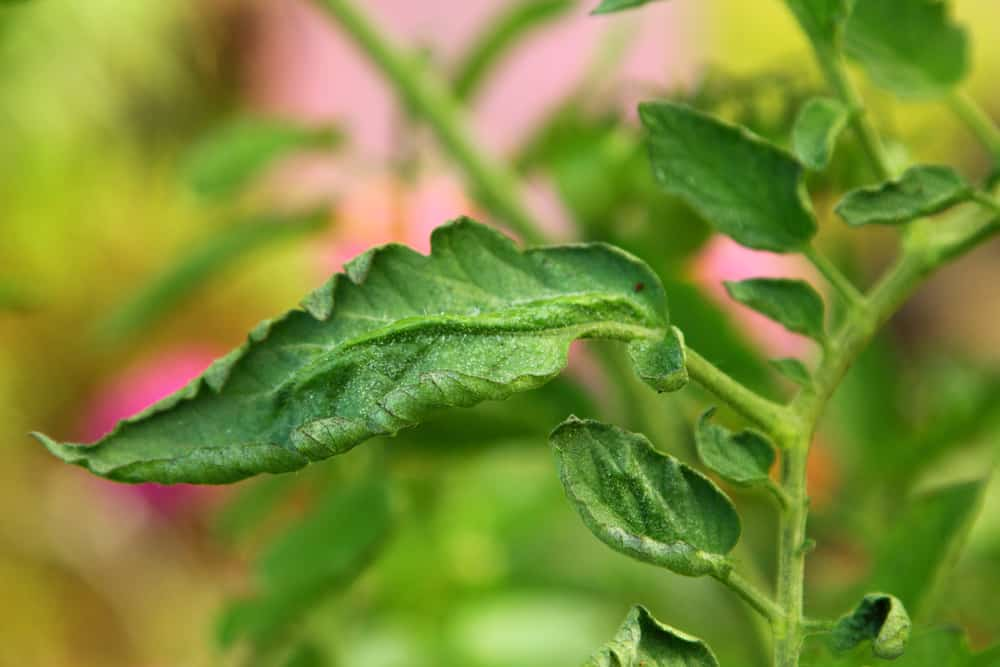
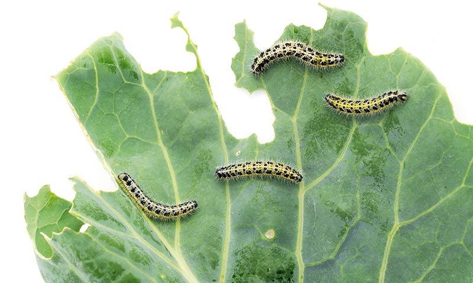
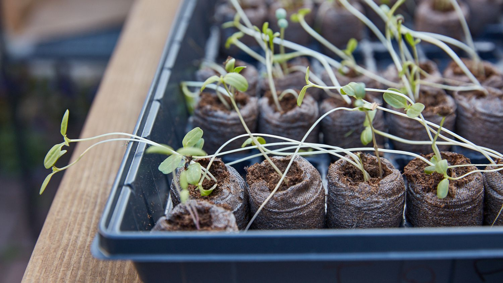
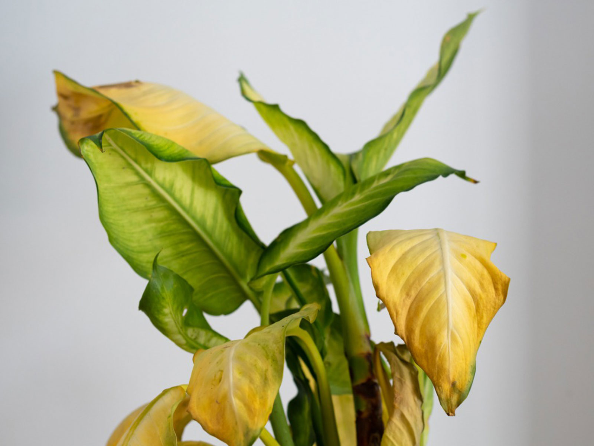
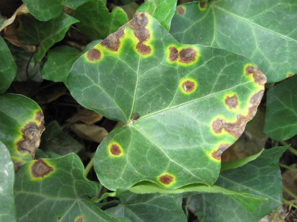
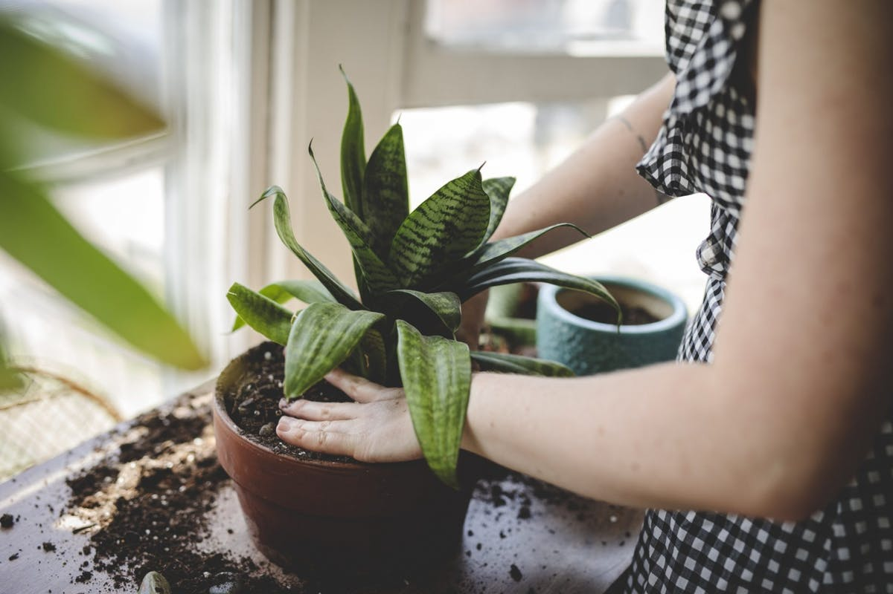

How to control Sucking pest

Stems become leggy (etiolated) and plant grows toward light source
This is due the the Insufficient of light to solve this problem simply move the plants into bright light

Stems and leaves turn become yellow
This is because of Iron, magnesium or other mineral deficiency; overwatering; too much calcium in the potting medium; insufficient light to solve this problem Feed properly with a complete fertilizer (with micro-elements); water less frequently; repot plant; correct pH; move into brighter light

Yellowish or reddish-brown lesions on the stems that may form corky scars
This is due to, too much sun; too cold, too damp, combined with low temperatures and fertilizer too high in nitrogen to solve this issue just Move to a shadier spot, raise temperature, increase air circulation and temperature and fertilize properly.

Plant stops growing
This is because of Underwatering; mineral deficiency root rot, natural winter dormancy to solve this problem Water more frequently fertilize properly repot plant allow plant to remain dormant until spring